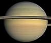
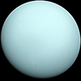

| 名字 | 图片 | 质量（1024kg） | 直径（km） | 密度（kg/m3） | 重力（m/s2） | 天长（小时） | 与太阳距离（106km） | 平均温度（℃） | 卫星数量 | 备注 | ||
|---|---|---|---|---|---|---|---|---|---|---|---|---|
| 类地行星 | 水星 | |
0.330 | 4879 | 5427 | 3.7 | 4222.6 | 57.9 | 167 | 0 | 距太阳最近 | |
| 金星 | |
4.87 | 12104 | 5243 | 8.9 | 2802.0 | 108.2 | 464 | 0 | |||
| 地球 | 5.97 | 12756 | 5514 | 9.8 | 24.0 | 149.6 | 15 | 1 | 我们的世界 | |||
| 火星 | |
0.642 | 6792 | 3933 | 3.7 | 24.7 | 227.9 | -65 | 2 | 红色星球 | ||
| 类木行星 | 气巨星 | 木星 | |
1898 | 142984 | 1326 | 23.1 | 9.9 | 778.6 | -110 | 67 | 太阳系最大 |
| 土星 |  | 568 | 120536 | 687 | 9.0 | 10.7 | 1433.5 | -140 | 62 | |||
| 冰巨星 | 天王星 |  | 86.8 | 51118 | 1271 | 8.7 | 17.2 | 2872.5 | -195 | 27 | ||
| 海王星 | 102 | 49528 | 1638 | 11.0 | 16.1 | 4495.1 | -200 | 14 | ||||
| 矮行星 | 冥王星 | |
0.0146 | 2370 | 2095 | 0.7 | 153.3 | 5906.4 | -225 | 5 | 2006年降格，但是 还存在争议. | |
备注：资料及图片取自 NASA 行星数据（公制单位）